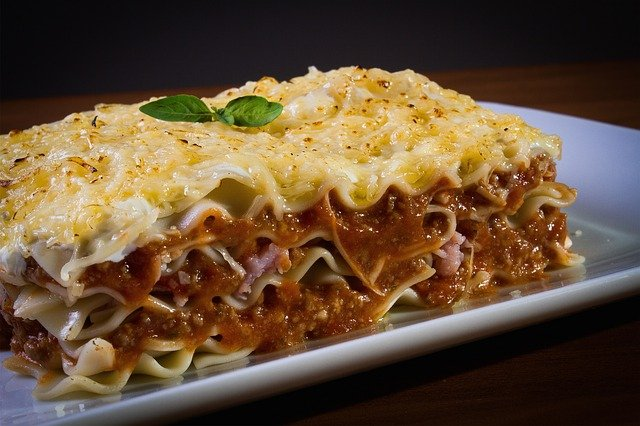

Lasagna

Lasagna (Italian: lasagna) is a type of pasta. It is usually served in
superimposed sheets interspersed with layers of ingredients to taste, most
often meat (ragú) in bolognese sauce and béchamel sauce. ... It ends with
béchamel sauce and plenty of grated cheese to gratin in the oven.
Ingredients
- 3 1/2 pounds ground beef
- 2 teaspoons garlic powder Garlic powder
- 2 tablespoons of MAGGI® Beef Broth
- 1 tablespoon of vegetable oil
- 1/3 cup onion finely chopped
- 3 garlic cloves, finely chopped
- 1/2 cup finely chopped celery
- 1 on MAGGI® Bolognese Tomato Sauce
- 3/4 cup of water
- 4 bay leaves
- 3/4 pound lasagna pasta, cooked Precooked lasagna pasta
- 2 cups shredded mozzarella cheese Salt and pepper to taste
- 1 cup of Parmesan cheese
Steps
-
Cheese Filling Mix the ricotta and cheeses (per recipe below) with an
egg in a bowl, and set aside. No ricotta? No problem, cottage cheese
works just fine in this recipe!
-
Meat Sauce Brown the onion, garlic, and meat in a pot on the stovetop.
Add the pasta sauce and tomato paste & simmer a few minutes.
-
Layer Together Layer the meat sauce and cheese mixture with noodles and
bake until bubbling
How to Layer Lasagna
-
Once you have prepared the meat sauce and cheeses, you’re ready to
layer. This is the order of layers: sauce – noodles – cheese sauce –
noodles – cheese sauce – noodles – cheese noodles – sauce (bake) –
cheese
-
Spread about a cup of meat sauce into a 9×13 pan. Add a layer of
noodles.
- Top the noodles with some of the cheese mixture.
- Repeat the layers, ending with a layer of noodles and sauce
- Cover with foil and bake.
-
Remove foil, top with mozzarella and parmesan and bake another 15
minutes.
How Long to Bake
Baking time lasagna for this recipe is about one hour total. To get that
perfect browned cheese topping, you’ll need to bake it in two stages.
- Layer, cover it tightly in foil to retain the moisture.
-
Once cooked, remove the foil, top with cheese, and return to the oven
for another 15 minutes, or until the top is browned and your easy
lasagna is bubbling.